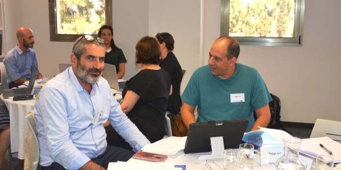

עבור בוגרי מנדל, העוסקים ביצירת שינוי חינוכי-חברתי, העברת מסרים אפקטיבית היא כלי מרכזי להשפעה, לגיוס שותפים ולרתימת בעלי עניין. לצורך זה הנחו שרונה בר-נס, חברת צוות בכירה ביחידת בוגרי מנדל, וד"ר יהודה מימרן, יועץ ביחידה, תהליך חידוד ודיוק של החזון האישי-מקצועי של המשתתפים, שכלל גם מפגשי היכרות בקבוצות קטנות על בסיס עקרונות ה-Storytelling.
ינון טגנר, מרצה ויועץ בכיר בתחום התקשורת הבינאישית ומיומנויות ההשפעה, הנחה את מפגשי הסדנה ולימד כיצד אפשר להפוך סיפור לכלי אפקטיבי בסביבה מוכוונת יעדים. המשתתפים התוודעו לעקרונות
ה-Storytelling ולמדו לספר סיפור באופן שישפיע על עמדתם של השומעים. במפגשים נלמדו כלים וטכניקות להנעה ללא סמכות, ליצירת בידול של הבוגרים ושל הארגונים שהם מובילים וליצירת מעורבות של בעלי עניין בעשייתם המקצועית.
המפגש השני יתקיים ב-30 באוקטובר ויעסוק בחשיפה לרשתות החברתיות ובקבלת כלים להעברת מסרים בפלטפורמות דיגיטליות שונות: Facebook, LinkedIn, Instagram. המפגש השלישי והאחרון יעסוק באינפוגרפיקה ובעיצוב מידע.
את יום העיון תכננה והובילה שרונה בר-נס חברת צוות בכירה ביחידת בוגרי מנדל.

{kind=link}